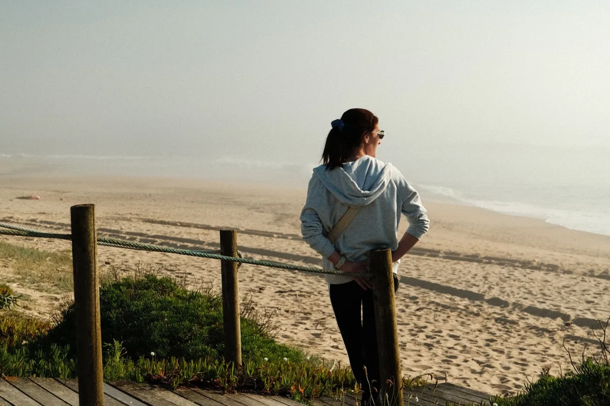

Surts de la feina i ja és fosc. Et costa més aixecar-te del llit. Els plans que a l’estiu et venien de gust ara et fan mandra, i tens la sensació que tot et costa una mica més. Et sona?
Quan arriba la tardor, molta gent nota un canvi en el seu estat d’ànim i en la seva energia. No és que t’hagis tornat menys capaç ni menys alegre de cop. Simplement, el cos i la ment també noten el canvi d’estació.
Per què ens passa?
La llum té un paper important en com ens sentim. Ajuda a regular el nostre rellotge intern, que marca quan tenim son, quan estem més actius i també influeix en l’estat d’ànim. Quan els dies s’escurcen i rebem menys llum natural, aquest rellotge es desajusta una mica.
A més, amb el fred tendim a sortir menys, a moure’ns menys i a quedar-nos més a casa. Fem menys coses que ens donen energia i ens connecten amb els altres, i això també pesa.
I hi ha un altre factor: el ritme no baixa. Continuem amb la feina, les obligacions i les presses de sempre, però amb menys llum i menys energia. És normal que en algun moment sentim que no arribem.

Com es pot notar?
- Més cansament, encara que dormis les mateixes hores.
- Més ganes de dormir o de quedar-te al sofà.
- Menys ganes de quedar amb gent o de fer plans.
- Més irritabilitat o sensibilitat davant de petites coses.
- Ganes de menjar coses més dolces o més reconfortants.
- Sensació d’estar més apagat/da, sense saber ben bé per què.
Notar-ho no vol dir que et passi res greu. Vol dir que t’estàs adaptant a un canvi, i que potser necessites cuidar-te d’una manera una mica diferent.
Petites coses que poden ajudar
- Busca la llum del dia. Intenta sortir a l’exterior durant les hores de sol, encara que sigui una estona curta: un passeig, un cafè a la terrassa o anar caminant a algun lloc.
- Mou-te una mica cada dia. No cal fer grans esforços. Caminar, estirar-te o ballar a casa també compta, i ajuda a recuperar energia.
- Mantén horaris regulars. Aixecar-te i anar a dormir a hores semblants ajuda el cos a ajustar-se al canvi de llum.
- No deixis de veure gent. Quan ve de gust tancar-se a casa, una trucada, un cafè o un passeig acompanyat poden canviar el dia.
- Fes un lloc als petits plaers de la temporada. Una manta, una sopa calenta, un llibre o una tarda tranquil·la també poden ser una manera de cuidar-te.
- Baixa una mica l’exigència. Si tens menys energia, potser no cal que facis el mateix que a l’estiu. Ajustar el ritme no és rendir-se.
Quan pot ser important demanar ajuda?
Sentir-se una mica més cansat o apagat durant la tardor és habitual. Però si el desànim és intens, dura setmanes, et costa fer les coses del dia a dia o sents que has perdut l’interès per gairebé tot, val la pena parlar-ne amb un professional. A vegades no és només l’estació, i mereixes que t’escoltin i t’acompanyin.
La tardor no et demana que facis més. Potser et demana que t’escoltis una mica més.
Referències
- Rosenthal, N. E., Sack, D. A., Gillin, J. C., Lewy, A. J., Goodwin, F. K., Davenport, Y., Mueller, P. S., Newsome, D. A., & Wehr, T. A. (1984). Seasonal affective disorder: A description of the syndrome and preliminary findings with light therapy. Archives of General Psychiatry, 41(1), 72–80.
- Magnusson, A., & Boivin, D. (2003). Seasonal affective disorder: An overview. Chronobiology International, 20(2), 189–207.
Si et sents apagat/da o sense ganes, no ho has de portar sol/a.
Podem mirar-ho amb calma i entendre què et passa. Les sessions també poden ser caminant, a l’aire lliure. La primera conversa és gratuïta i sense compromís.
Reserva una trucada de 15 minuts